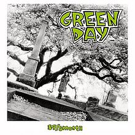

At their core, Green Day were simply punk revivalists who recharged the energy of speedy, catchy three-chord punk-pop songs. Though their music wasn't particularly innovative, they brought the sound of late-'70s punk to a new, younger generation with Dookie, their 1994 major-label debut. Dookie sold over ten million copies, paving the way for a string of multi-platinum releases that opened the doors for a flood of American neo-punk, punk metal, and third wave ska revivalists. More than a decade later, as many of their former contemporaries settled into retirement, Green Day remained at the forefront of popular music with albums like the Grammy-winning American Idiot.
Green Day arose from the Northern California underground punk scene. Childhood friends Billie Joe Armstrong (guitar, vocals) and Mike Dirnt (bass; born Mike Pritchard) formed their first band, Sweet Children, in Rodeo, California when they were 14 years old. By 1989, the group had added drummer Al Sobrante and changed its name to Green Day. Green Day's first full album, 1,039/Smoothed Out Slappy Hour, was released later that year. Shortly after its release, the band replaced Sobrante with Tre Cool (born Frank Edwin Wright III), who became the band's permanent drummer.
Throughout the early '90s, Green Day continued to cultivate a cult following, which only gained strength with the release of their second album, 1992's Kerplunk. The underground success of Kerplunk led to a wave of interest from major record labels, and the band eventually decided to sign with Reprise. Dookie, Green Day's major-label debut, was released in the spring of 1994. Thanks to MTV support for the initial single, "Longview," Dookie became a major hit. The album continued to gain momentum throughout the summer, with the second single, "Basket Case," spending five weeks on top of the American modern rock charts.
Green Day quickly followed Dookie with Insomniac in the fall of 1995; during the summer, they hit number one again on the modern rock charts with "J.A.R.," their contribution to the Angus soundtrack. Insomniac performed well initially, entering the U.S.
Another long wait preceded 2004's American Idiot, an aggressive rock opera that became a surprise success -- a chart-topper around the world, a multi-platinum Grammy winner, and easily the best-reviewed album of their career.
While presenting an award at the Grammys in early 2009, the band announced the impending release of Green Day's eighth album, 21st Century Breakdown, which had been recorded with veteran producer Butch Vig. In May of 2009, 21st Century Breakdown was released, picking up where American Idiot left off, as another ambitious punk rock opera. The album was a commercial success, selling over 215,000 copies in its first three days of sales. In 2009, American Idiot was adapted for the stage, and the following year, Green Day lent their talents to the original cast recording, combining a driving score with Broadway vocal arrangements.
During the summer of 2012, Green Day unveiled their ambitious plans for the fall and winter: they would release not one but three new albums. The records -- ¡Uno!, ¡Dos!, ¡Tré! -- would appear in September 2012, November 2012, and January 2013, respectively, with each individual bandmember gracing one of the album covers on his own. The first, appropriately called ¡Uno!, was preceded by the disco-rock single "Kill the DJ" and the anthemic arena rocker "Oh Love. ¡Dos! arrived as scheduled in November 2012 and ¡Tré! was moved up to a December release. Demolicious, a collection of 18 demos recorded during the making of their ¡Uno! ¡Dos! ¡Tré! trilogy, showed up in time for 2014's Record Store Day release schedule.

In 2015, Green Day were inducted into the Rock & Roll Hall of Fame. Following their induction, producer Rob Cavallo announced that he had started work on a new album with the trio. As they labored on the new record, Green Day released a single called "Xmas Time of the Year" for the 2015 holiday. The raucous "Bang Bang" was the first taste of the new record, Revolution Radio, which arrived in October 2016. A year later, the group released a career-spanning compilation called Greatest Hits: God's Favorite Band.
Discography:
Album: 39/Smoothe. Year: 1990.

Album:1,039/Smoothed out slappy hours. Year:1991.
Album: Kerplunk!. Year: 1992.
Album: Dookie. Year: 1994.
Album: Insomniac. Year: 1995.
Album: Nimrod. Year: 1997.
Album: Warning. Year: 2000.
Album: American Idiot. Year: 2004.
Album: Bullet In a Biblie. Year: 2005.
Album: 21st Century Breakdown. Year: 2009.
Album: American Idiot [The Original Broadway Cast Recording]. Year: 2010.
Album: Awesome As F**k. Year: 2011.
Album: ¡UNO!, ¡DOS! and ¡TRÉ!. Year: 2012.
Album: Revolution Radio. Year: 2016.
Songs Highlights:
Boulevard Of Broken Dreams.
American Idiot.
Basket Case.
21 Guns.
Wake Me Up When September Ends.
Jesus Of Suburbia.